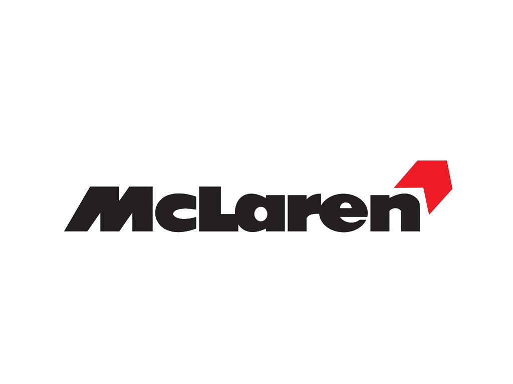

As you prabaly saw my page about Porsche's, this is also another car page but about Mclaren's. The reason why i did this instead of the history portion of the project is becuase im not taking that class. So i got to it on something that interest me which is cars. But anyway here are somethings i think you should know about mclaren, Mclaren is a british sports car company that was founded in 1963. It got its name and reputaion in the formula 1 racing industry. Later, the company evoled into making production super cars such as the 720s and the 675 lt. These cars are reguarded as some of the best and fastest car you can buy. Mclaren also beholds one of the fastest prduction cars in the world, the p1. That car can keep up with cars like the Bugatti veyron and the Porshe 918 spyder which are some of the fastest cars ever made. these are some of the reasons why Mclaren is so reputable to this day.
